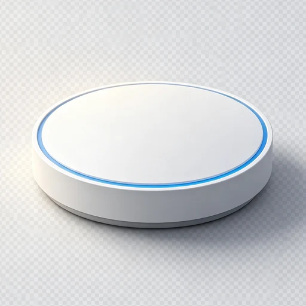
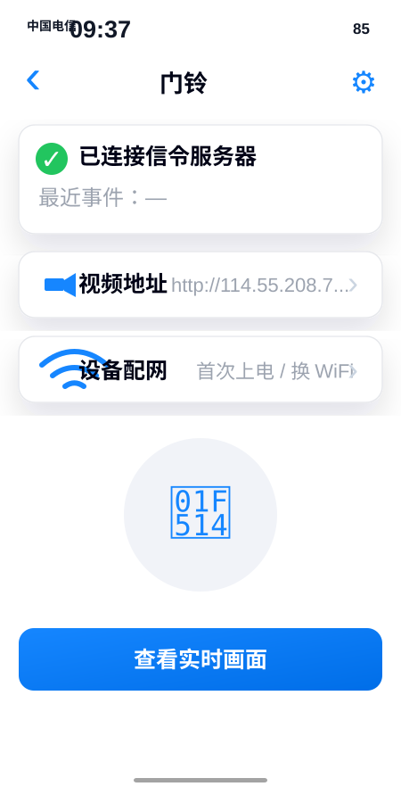
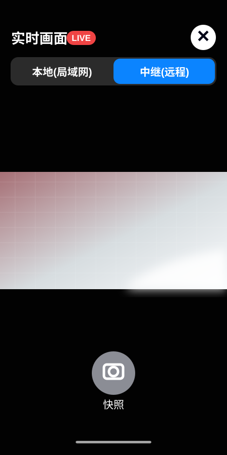
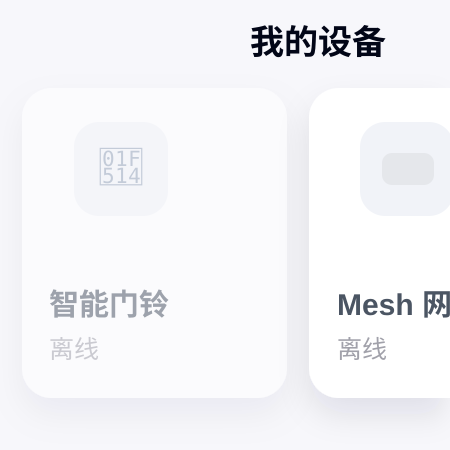

门铃是 LightMesh 体系里的网络型设备：它和灯控、网关共用同一个 App 和云端账号体系， 但底层不依赖 Mesh 转发，而是独立走 Wi-Fi、MQTT 信令和 MJPEG 视频链路。



设备详情页说明“已连接信令服务器”和配网入口；实时画面页说明本地/中继切换；设备列表页说明门铃和 Mesh 设备在同一个 App 中统一管理。

这个设计是为了稳定性：灯控节点走 Mesh 控制，门铃走网络视频。两条链路互不拖累，但 App 页面、账号、设备影子和 OTA 入口保持统一。
首次上电或换 WiFi 时，App 从门铃详情页进入配网流程，把 SSID、密码和服务器地址写入设备侧存储。
门铃上报在线状态、事件和视频地址；App 看到“已连接信令服务器”后，才开放实时画面入口，避免用户点进空页面。
farmely/doorbell/<device_id>/up/status farmely/doorbell/<device_id>/up/event
在同一实时画面页里切换“本地(局域网)”和“中继(远程)”。局域网适合近场低延迟调试，中继适合外网访问。
如果信令服务器未连接，先看 Wi-Fi、MQTT 地址、账号绑定和设备 ID，不急着查视频流。
App 展示的视频地址要能在本地或中继服务里访问，否则实时画面页会打开但没有画面。
局域网通但中继不通，优先查云端 relay；中继通但本地不通，优先查手机和门铃是否同网段。
门铃网络链路和 BLE Mesh 灯控链路独立，修改门铃页面时不要改动灯控节点配网、Mesh 控制和 OTA 入口。